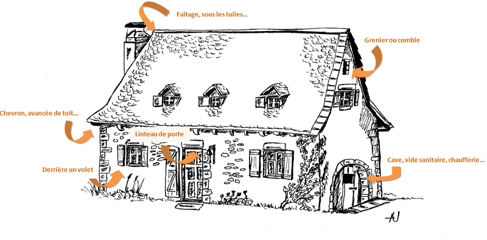

SOS Chauve souris
Chauve-souris blessée ? Contacter un soigneur agréé : 06 46 62 36 89
Les chauves-souris s’installent régulièrement dans des bâtiments que ce soit en hiver pour hiberner ou en été pour donner naissance à leur jeune.
Ce qu’il faut savoir sur ces animaux …
Les chauves-souris d’Europe ne se nourrissent que d’insectes ! Un Murin de Daubenton (environ 10 grammes) peut ainsi consomme l’équivalent de 60 000 moustiques en un été !
Elles ne donnent naissance qu’à un seul petit par an. Elles ne peuvent donc pas « pulluler » comme certains rongeurs ;
Elles ne mangent pas la laine de verre et le bois ;
Elles n’aménagent pas de nid et n’apportent aucun matériau dans votre toiture. Elles n’utilisent que des espaces existant ;
Leur urine ne détruit pas le bois des charpentes ;
Très menacées, toutes les chauves-souris sont protégées par la loi.
Où s’installent-elles ?
Suivant les exigences propres à chaque espèce, on peut rencontrer des chauves-souris en de nombreux points d’un bâtiment.
Comment reconnaître la présence des chauves-souris ?
Vous trouvez des crottes, de taille assez petite et de couleur noire. Ces crottes sont-elles facilement friables entre vos doigts et y observez-vous des petits restes d’insectes brillants ? Oui ? Il s’agit donc bien de chauves-souris. Les crottes de rongeurs, elles, sont solides et difficile à effriter.
Vous entendez de petits cris stridents provenant de sous la toiture. Il peut s’agir de chauves-souris, mais l’analyse des crottes ou l’observation des animaux sortant le soir sera nécessaire pour confirmer cette hypothèse.
Vous observez des animaux sortant le soir de la toiture. Il n’y a plus de doute sur la présence de chauves-souris chez vous.
Vous observez des animaux dans le grenier ou la cave, certaines espèces se tenant effectivement à découvert. Attention, ne les dérangez pas, elles sont fragiles vous risqueriez de les faire mourir.
La cohabitation avec les chauves-souris est possible, parfois avec l’aide de quelques aménagements … Mais chaque cas est unique suivant l’espèce et la configuration du bâtiment.
N’hésitez pas à contacter le réseau SOS chauve-souris pour des conseils ou que vous avez trouvé une chauve-souris blessée.
Chauve-Souris Auvergne.
le Chauffour, 3 rue de Brenat
63320 ORBEIL
04-73-89-13-46
Je n’habite pas en Auvergne, à qui m’adresser ?
ATTENTION !!!
Les chauves-souris étant toutes protégées par la loi, il est interdit de les manipuler, de les détruire, de les mutiler et des les transporter. Le réseau SOS chauve-souris n’a pas vocation à vous « débarrasser des chauves-souris ». Il s’agit de spécialistes bénévoles qui sont là pour aider à la cohabitation homme/chauve-souris et pour vous aider à trouver des solutions en cas de nuisances ou de problèmes.
ATTENTION !!!
la rage des chauves-souris.
En 12 ans, une douzaine de chauves-souris, porteuses d’un virus proche de la rage, ont été découvertes en France. Toutes étaient des Sérotines communes. Ce virus rare est différent de celui de la rage du Renard et du Chien (éradiquée à ce jour en France). L’AFSSA (Agence Française de Sécurité Sanitaire des Aliments) en collaboration avec le réseau des chiroptérologues français étudie dans quelle mesure il est susceptible de contaminer l’homme ou tout autre animal (aucun cas connu de transmission à l’homme à ce jour !).
Pour éviter tout risque de contamination, extrêmement faible, une mesure très simple s’impose : ne jamais manipuler de chauve-souris à main nue mais porter des gants en cuir épais, en particulier lorsqu’il s’agit de sauver un animal blessé.
En cas de morsure par une chauve-souris dont on ne connaît pas l’espèce et au comportement jugé atypique (animal stoïque, exposé à la lumière extérieure, poussant des cris stridents … puis retombant dans une phase de tétanie ou de prostration), il convient de s’adresser à l’association de protection des chauves-souris (Chauve-Souris Auvergne en Auvergne) et au centre antirabique de sa région. Ce comportement peut aussi être engendré par le stress, une blessure, un empoisonnement, … et n’est donc pas spécifique d’une chauve-souris « enragée ».